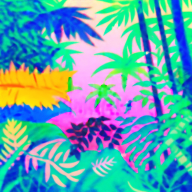
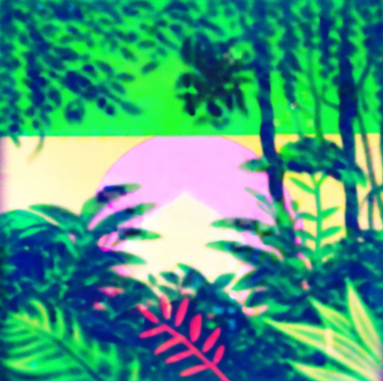
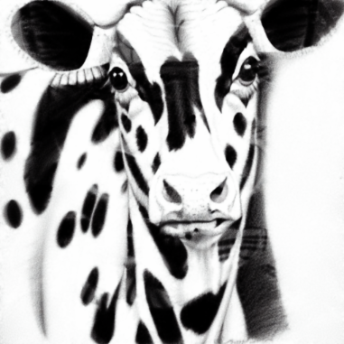
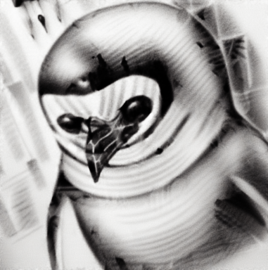
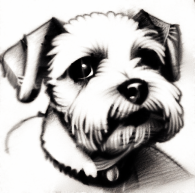
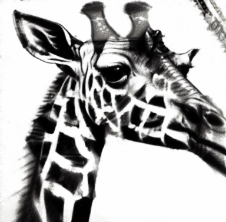
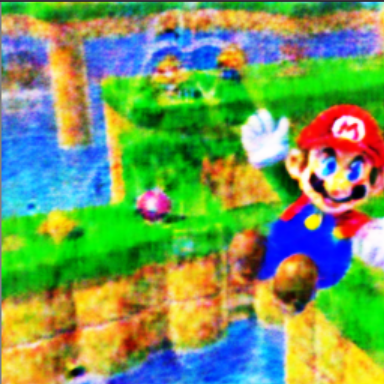
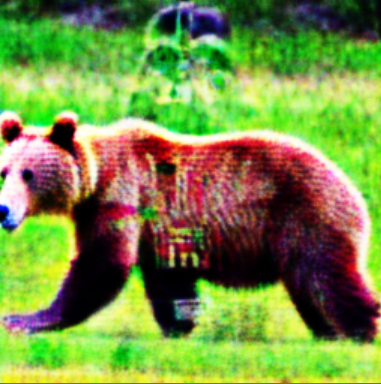
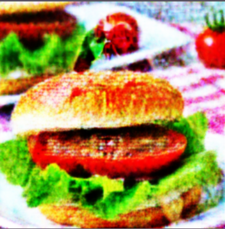
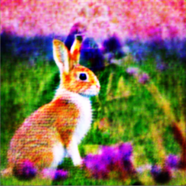

Abstract
Interactive Demos
Flip Illusion
Click and drag to rotate, double-click to reset!

giraffe/penguin

ship/ship

dress/dress
Rotation Overlay Illusion
Click and drag to rotate the top image. Watch how the combined image changes!


Hidden Overlay Illusion
Drag multiple transparent images together to reveal a hidden pattern underneath!













Scan it!